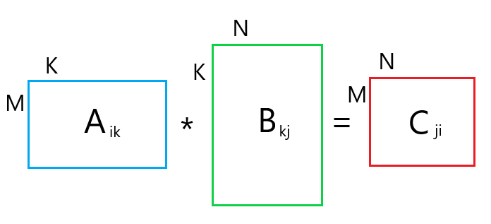
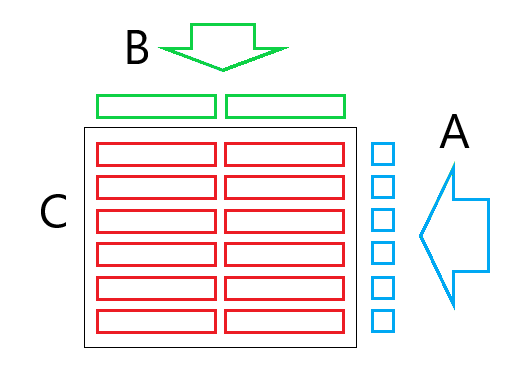
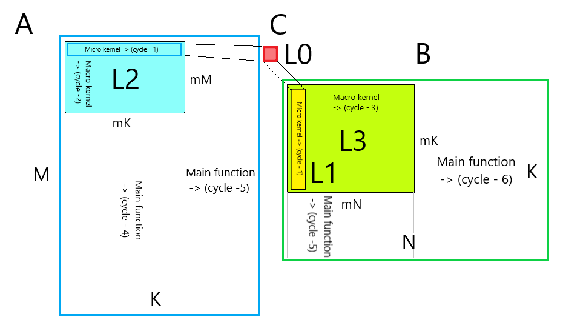

Умножение матриц — это один из базовых алгоритмов, который широко применяется в различных численных методах, и в частности в алгоритмах машинного обучения. Многие реализации прямого и обратного распространения сигнала в сверточных слоях неронной сети базируются на этой операции. Так порой до 90-95% всего времени, затрачиваемого на машинное обучение, приходится именно на эту операцию
Матричное умножение — один из немногих алгоритмов, которые позволяет эффективно задействовать все вычислительные ресурсы современных процессоров и графических ускорителей. Поэтому не удивительно, что многие алгоритмы стараются свести к матричному умножению — дополнительная расходы, связанные с подготовкой данных, как правило с лихвой окупаются общим ускорением алгоритмов.
В общем случае функция матричного умножения описывается как:
C[i,j] = a*C[i,j] + b*Sum(A[i,k]*B[k,j]);
Где матрица A имеет размер M х K, матрица B — K х N, и матрица C — M х N.

Рис. 12.1. Модель умножения матриц
Мы без ущерба для изложения, можем считать, что a = 0 и b = 1:
C[i,j] = Sum(A[i,k]*B[k,j]);
Ее реализация на С++ «в лоб» по формуле будет выглядеть следующим образом:
void gemm_v0(int M, int N, int K, const float * A, const float * B, float * C)
{
for (int i = 0; i < M; ++i)
{
for (int j = 0; j < N; ++j)
{
C[i*N + j] = 0;
for (int k = 0; k < K; ++k)
C[i*N + j] += A[i*K + k] * B[k*N + j];
}
}
}
Сначала устраним самые очевидные недостатки алгоритма:
Вычисление адресов элементов массивов можно упростить — вынести постоянную часть из внутреннего цикла.
В оригинальной версии доступ к элементам массива B производится не последовательно. Его можно упорядочить, если поменять порядок вычисления таким образом, чтобы внутренним циклом был последовательный обход по строчкам для всех трех матриц.
В предыдущей версии на 1 FMA операцию приходится 2 загрузки и 1 выгрузка.
Больше всего загрузок и выгрузок происходит с результирующей матрицей С: данные из нее нужно загрузить, прибавить к ним произведение C[i][j] += A[i][k]*B[k][j], а потом сохранить. И так много раз. Наиболее быстрая память, с которой может работать процессор — это его собственные регистры. Если мы будем хранить результирующее значение матрицы С в регистре процессора, то в процессе расчета нужно будет подгружать только значение матриц A и B. Теперь у нас на 1 FMA операцию приходится только 2 загрузки.
Если мы будем хранить в регистрах значения двух соседних столбцов матрицы C[i][j] и C[i][j+1], то сможем повторно использовать загруженное значение матрицы A[i][k]. И на 1 FMA операцию потребуется только 1.5 загрузки. Кроме того, сохраняя результат в 2 независимых регистра, мы позволим процессору выполнять 2 FMA операции за такт. Аналогично можно хранить в регистрах значения двух соседних строк — тогда будет осуществляться экономия на загрузке значений матрицы B.

Рис. 12.2. Переупорядочивание
Микроядро за каждую итерацию загружает два 256-bit вектора из матрицы B.
Причем каждый раз из новой строчки. Это делает невозможным для процессора эффективное кеширование этих данных. Для исправления этой ситуации сделаем два изменения:
Скопируем данные матрицы B во временный буфер таким образом, чтобы данные, необходимые одному микроядру лежали рядом.
Изменим порядок обхода матрицы С: сначала будем ходить по столбцам и только потом по строкам. Это позволит эффективнее использовать переупорядоченные значения матрицы B.
Для хранения буфера заведем небольшую структуру:
Так почему же с ростом параметра K, падает эффективность алгоритма? Ответ кроется в величине буфера, который мы использовали для хранения переупорядоченных значений B. При больших значениях K он просто не влазит в кэш процессора. Решением проблемы будет ограничение его величины до размера кэша данных L1. Для процессоров Интел размер кэша данных L1 составляет 32 kb. C ограничением размера буфера, микроядро будет пробегать не по всем значениям K, а только по диапазону, который влазит в L1 кэш. Результаты промежуточных расчетов матрицы С будут храниться в основной памяти.
Введем макроядро — вспомогательную функцию, которая производит расчеты над областью данных, которые влазят в кэш:
void macro_v5(int M, int N, int K, const float * A, intlda,
const float * B, intldb, float * bufB, float * C, intldc)
{
for (int j = 0; j < N; j += 16)
{
reorder_b_16(K, B + j, ldb, bufB);
for (int i = 0; i < M; i += 6)
micro_6x16(K, A + i*lda, lda, 1, bufB, 16, C + i*ldc + j, ldc);
}
}
В главной функции у нас добавится цикл по K, в котором мы будем вызывать макроядро:
void gemm_v5(int M, int N, int K, const float * A, const float * B, float * C)
{
constint L1 = 32 * 1024;
intmK = std::min(L1 / 4 / 16, K);
buf_tbufB(16 * mK);
for(int k = 0; k < K; k += mK)
{
intdK = std::min(K, k + mK) - k;
if(k == 0)
init_c(M, N, C, N);
macro_v5(M, N, dK, A + k, K, B + k*N, N, bufB.p, C, N);
}
}
Результаты замеров показывают, что мы движемся в правильном направлении: для (M=1152, N=1152, K=115200) производительность алгоритма составила 78.1 GFLOPS. Это значительно лучше, чем в прошлой версии, но все еще хуже, чем для матрицы средних размеров.
Ограничив размер K, который обрабатывается за один проход микроядра, мы сумели локализовать данные матрицы B в кэше L1. Данных, которые подгружаются из матрицы A почти в три раза меньше. Но давайте попробуем локализовать и их, заодно переупорядочив данные, чтобы они лежали последовательно. Напишем для этого специальную функцию:
void reorder_a_6(const float * A, intlda, int M, int K, float * bufA)
{
for (int i = 0; i < M; i += 6)
{
for (int k = 0; k < K; k += 4)
{
const float * pA = A + k;
__m128 a0 = _mm_loadu_ps(pA + 0 * lda);
__m128 a1 = _mm_loadu_ps(pA + 1 * lda);
__m128 a2 = _mm_loadu_ps(pA + 2 * lda);
__m128 a3 = _mm_loadu_ps(pA + 3 * lda);
__m128 a4 = _mm_loadu_ps(pA + 4 * lda);
__m128 a5 = _mm_loadu_ps(pA + 5 * lda);
__m128 a00 = _mm_unpacklo_ps(a0, a2);
__m128 a01 = _mm_unpacklo_ps(a1, a3);
__m128 a10 = _mm_unpackhi_ps(a0, a2);
__m128 a11 = _mm_unpackhi_ps(a1, a3);
__m128 a20 = _mm_unpacklo_ps(a4, a5);
__m128 a21 = _mm_unpackhi_ps(a4, a5);
_mm_storeu_ps(bufA + 0, _mm_unpacklo_ps(a00, a01));
_mm_storel_pi((__m64*)(bufA + 4), a20);
_mm_storeu_ps(bufA + 6, _mm_unpackhi_ps(a00, a01));
_mm_storeh_pi((__m64*)(bufA + 10), a20);
_mm_storeu_ps(bufA + 12, _mm_unpacklo_ps(a10, a11));
_mm_storel_pi((__m64*)(bufA + 16), a21);
_mm_storeu_ps(bufA + 18, _mm_unpackhi_ps(a10, a11));
_mm_storeh_pi((__m64*)(bufA + 22), a21);
bufA += 24;
}
A += 6 * lda;
}
}
Так как, данные матрицы A теперь идут последовательно, то параметр lda в макроядре нам больше не нужен. Также поменялись параметры вызова микроядра:
void macro_v6(int M, int N, int K, constfloat * A,
const float * B, intldb, float * bufB, float * C, intldc)
{
for (int j = 0; j < N; j += 16)
{
reorder_b_16(K, B + j, ldb, bufB);
for (int i = 0; i < M; i += 6)
micro_6x16(K, A + i*K, 1, 6, bufB, 16, C + i*ldc + j, ldc);
}
}
Размер буфера для переупорядоченной матрицы A ограничиваем размером L2 кэша процессора (он обычно составляет от 256 до 1024 kb для разных типов процессоров). В главной функции добавляется дополнительный цикл по переменной M:
void gemm_v6(int M, int N, int K, constfloat * A, constfloat * B, float * C)
{
constint L1 = 32 * 1024, L2 = 256*1024;
intmK = std::min(L1 / 4 / 16, K) / 4 * 4;
intmM = std::min(L2 / 4 / mK, M) / 6 * 6;
buf_tbufB(16 * mK);
buf_tbufA(mK * mM);
for(int k = 0; k < K; k += mK)
{
intdK = std::min(K, k + mK) - k;
for (int i = 0; i < M; i += mM)
{
intdM = std::min(M, i + mM) - i;
if (k == 0)
init_c(dM, N, C + i * N, N);
reorder_a_6(A + i * K + k, K, dM, dK, bufA.p);
macro_v6(dM, N, dK, bufA.p, B + k * N, N, bufB.p, C + i * N, N);
}
}
}
Результаты тестовых замеров для (M=1152, N=1152, K=115200) — 88.9 GFLOPS — приблизились еще на один шаг к результату для матриц среднего размера.
В процессорах помимо кэша L1 и L2 еще часто бывает кэш L3 (обычно его размер составляет 1-2 MB на ядро). Попробуем задействовать и его, например, для хранения переупорядоченных значений матриц B, чтобы избежать лишних вызовов функции reorder_b_16. В функции макроядра появится дополнительные параметр reorderB, который будет сообщать о том, что данныe матрицы B уже упорядочены:
void macro_v7(int M, int N, int K, const float * A,
const float * B, intldb, float * bufB, boolreorderB, float * C, intldc)
{
for (int j = 0; j < N; j += 16)
{
if(reorderB)
reorder_b_16(K, B + j, ldb, bufB + K*j);
for (int i = 0; i < M; i += 6)
micro_6x16(K, A + i*K, 1, 6, bufB + K*j, 16, C + i*ldc + j, ldc);
}
}
В основной функции добавится цикл по N:
void gemm_v7(int M, int N, int K, const float * A, const float * B, float * C)
{
constint L1 = 32 * 1024, L2 = 256*1024, L3 = 2*1024*1024;
intmK = std::min(L1 / 4 / 16, K) / 4 * 4;
intmM = std::min(L2 / 4 / mK, M) / 6 * 6;
intmN = std::min(L3 / 4 / mK, N) / 16 * 16;
buf_tbufB(mN * mK);
buf_tbufA(mK * mM);
for (int j = 0; j < N; j += mN)
{
intdN = std::min(N, j + mN) - j;
for (int k = 0; k < K; k += mK)
{
intdK = std::min(K, k + mK) - k;
for (int i = 0; i < M; i += mM)
{
intdM = std::min(M, i + mM) - i;
if (k == 0)
init_c(dM, dN, C + i * N + j, N);
reorder_a_6(A + i * K + k, K, dM, dK, bufA.p);
macro_v7(dM, dN, dK, bufA.p, B + k * N + j, N,
bufB.p, i == 0, C + i * N + j, N);
}
}
}
}
Результаты замеров для (M=1152, N=1152, K=115200) дают результат в 97.3 GFLOPS. Т.е. мы даже немного превысили результат для матриц среднего размера. Фактически мы получили универсальный алгоритм (на самом деле нет, про ограничения в следующем разделе), который практически одинаково эффективно (порядка 80% от теоретически достижимого макимума) работает для любого размера матриц. На этом предлагаю остановиться и описать, что у нас в итоге получилось.
На рисунке ниже приведена схема получившегося алгоритма:

Рис. 12.3. Схема алгоритма
Цикл-1 по переменной k. Переупорядоченные данные из матрицы B лежат в кэше L1, переупорядоченные данные из матрицы A лежат в кэше L2. Сумма аккумулируется в регистрах (кэше L0). Результат записывается в основную память. Размеры микроядра определяются длиной SIMD вектора и количеством векторных регистров. Длина цикла определяется размером кэша L1, где хранится B.
Цикл-2 по переменной i. Пробегает микроядром по переупорядоченным данным матрицы A, которые лежат в кэше L2.
Цикл-3 по переменной j. Пробегает микроядром по переупорядоченным данным матрицы B, которые лежат в кэше L3. Опционально переупорядочивает недостающие данные в B.
Размеры макроядра определяются величиной кэша.
Цикл-4 по переменной i. Пробегает макроядром по матрице A. На каждой итерации переупорядочивает значения A. Опционально инициализирует значения матрицы С.
Цикл-5 по переменной k. Пробегает макроядром по матрицам A и B.
Цикл-6 по переменной j. Пробегает макроядром по матрице B.